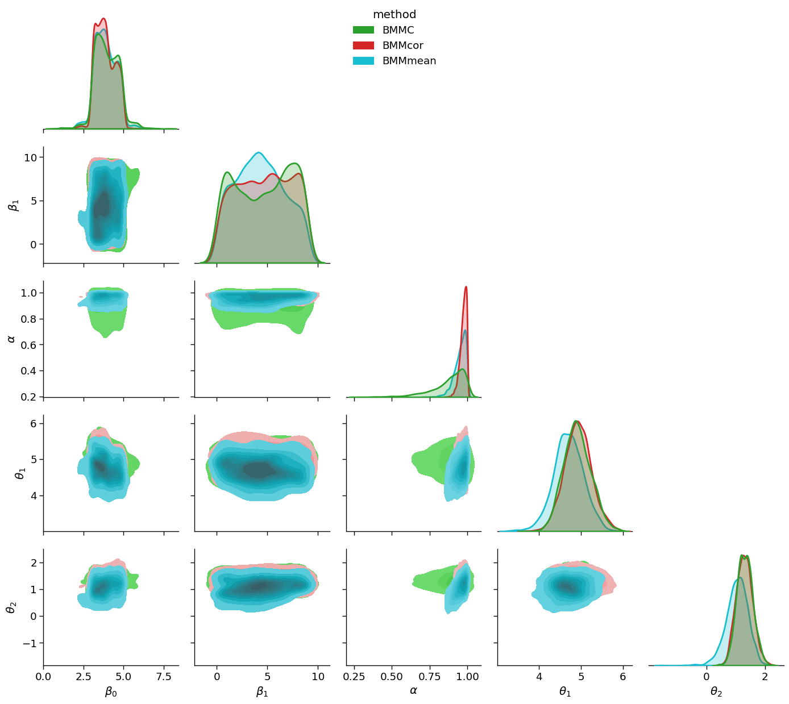
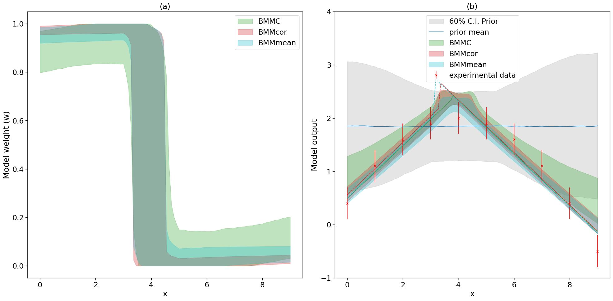

Comparative study of BMM method in bivariate linear module using Coleman toy models.
The best way to learn Taweret is to use it. You can run, modify and experiment with this notebook using GitHub Codespaces.
The models can be found in Coleman Thesis : https://go.exlibris.link/3fVZCfhl
This notebook shows how to use the Bayesian model mixing methods available in bivariate_linear mixing method of package Taweret for a toy problem.
Author : Dan Liyanage
Date : 08/14/2023
[1]:
import sys
import os
# You will have to change the following imports depending on where you have
# the packages installed
# Setting Taweret path
cwd = os.getcwd()
# Get the first part of this path and append to the sys.path
tw_path = cwd.split("Taweret/")[0] + "Taweret"
sys.path.append(tw_path)
# For plotting
import matplotlib.pyplot as plt
import seaborn as sns
sns.set_context('poster')
# To define priors. (uncoment if not using default priors)
import bilby
# For other operations
import numpy as np
[2]:
# Import models with a predict method
from Taweret.models import coleman_models as toy_models
m1 = toy_models.coleman_model_1()
m2 = toy_models.coleman_model_2()
truth = toy_models.coleman_truth()
[3]:
#!pwd
/Users/dananjayaliyanage/temp/Taweret/docs/source/notebooks
[4]:
g = np.linspace(0,9,10)
plot_g = np.linspace(0,9,100)
true_output = truth.evaluate(plot_g)
exp_data = truth.evaluate(g)
1. The models and the experimental data.
Truth
\(f(x) = 2-0.1(x-4)^2\), where \(x \in [-1, 9]\)
Model 1
\(f_1(x,\theta)= 0.5(x+\theta)-2\) , where \(\theta \in [1, 6]\)
Model 2
\(f_2(x,\theta)= -0.5(x-\theta) + 3.7\) , where \(\theta \in [-2, 3]\)
Experimental data
sampled from the Truth with a fixed standard deviation of 0.3
[5]:
sns.set_context('notebook')
fig, axs = plt.subplots(1,2,figsize=(20,5))
prior_ranges = [(1,6), (-2,3)]
for i in range(0,2):
ax = axs.flatten()[i]
ax.plot(plot_g, true_output[0], label='truth', color='black')
ax.errorbar(g,exp_data[0],exp_data[1], fmt='o', label='experimental data', color='r')
ax.legend()
ax.set_ylim(-2,4)
for value in np.linspace(*prior_ranges[i],10):
if i==0:
predict_1 = m1.evaluate(plot_g, value, full_corr=False)
ax.plot(plot_g, predict_1[0])
ax.set_ylabel(r'$f_1(x)$')
if i==1:
predict_2 = m2.evaluate(plot_g, value, full_corr=False)
ax.plot(plot_g, predict_2[0])
ax.set_ylabel(r'$f_2(x)$')
ax.set_xlabel('x')

2. Choose a Mixing method
[6]:
# Mixing method
from Taweret.mix.bivariate_linear import BivariateLinear as BL
models= {'model1':m1,'model2':m2}
[7]:
mix_model_BMMC_mix = BL(models_dic=models, method='addstepasym', nargs_model_dic={'model1':1, 'model2':1},
same_parameters = False)
mix_model_BMMcor_mix = BL(models_dic=models, method='addstepasym', nargs_model_dic={'model1':1, 'model2':1},
same_parameters = False, BMMcor=True)
mix_model_mean_mix = BL(models_dic=models, method='addstepasym', nargs_model_dic={'model1':1, 'model2':1},
same_parameters = False, mean_mix=True)
mix_models = [mix_model_BMMC_mix, mix_model_BMMcor_mix, mix_model_mean_mix]
addstepasym mixing function has 3 free parameter(s)
Warning : Default prior is set to {'addstepasym_0': Uniform(minimum=0, maximum=1, name='addstepasym_0', latex_label='addstepasym_0', unit=None, boundary=None), 'addstepasym_1': Uniform(minimum=0, maximum=1, name='addstepasym_1', latex_label='addstepasym_1', unit=None, boundary=None), 'addstepasym_2': Uniform(minimum=0, maximum=1, name='addstepasym_2', latex_label='addstepasym_2', unit=None, boundary=None)}
To change the prior use `set_prior` method
Using default priors for model 1
{'model1_0': Uniform(minimum=1, maximum=6, name='model1_0', latex_label='model1_0', unit=None, boundary=None)}
Using default priors for model 2
{'model2_0': Uniform(minimum=-2, maximum=3, name='model2_0', latex_label='model2_0', unit=None, boundary=None)}
addstepasym mixing function has 3 free parameter(s)
Warning : Default prior is set to {'addstepasym_0': Uniform(minimum=0, maximum=1, name='addstepasym_0', latex_label='addstepasym_0', unit=None, boundary=None), 'addstepasym_1': Uniform(minimum=0, maximum=1, name='addstepasym_1', latex_label='addstepasym_1', unit=None, boundary=None), 'addstepasym_2': Uniform(minimum=0, maximum=1, name='addstepasym_2', latex_label='addstepasym_2', unit=None, boundary=None)}
To change the prior use `set_prior` method
addstepasym mixing function has 3 free parameter(s)
Warning : Default prior is set to {'addstepasym_0': Uniform(minimum=0, maximum=1, name='addstepasym_0', latex_label='addstepasym_0', unit=None, boundary=None), 'addstepasym_1': Uniform(minimum=0, maximum=1, name='addstepasym_1', latex_label='addstepasym_1', unit=None, boundary=None), 'addstepasym_2': Uniform(minimum=0, maximum=1, name='addstepasym_2', latex_label='addstepasym_2', unit=None, boundary=None)}
To change the prior use `set_prior` method
[8]:
## uncoment to change the prior from the default
priors = bilby.core.prior.PriorDict()
priors['addstepasym_0'] = bilby.core.prior.Uniform(0, 9, name="addstepasym_0")
priors['addstepasym_1'] = bilby.core.prior.Uniform(0, 9, name="addstepasym_1")
priors['addstepasym_2'] = bilby.core.prior.Uniform(0, 1, name="addstepasym_2")
for mix_model in mix_models:
mix_model.set_prior(priors)
[9]:
for mix__model in mix_models:
print(mix_model.prior)
{'addstepasym_0': Uniform(minimum=0, maximum=9, name='addstepasym_0', latex_label='addstepasym_0', unit=None, boundary=None), 'addstepasym_1': Uniform(minimum=0, maximum=9, name='addstepasym_1', latex_label='addstepasym_1', unit=None, boundary=None), 'addstepasym_2': Uniform(minimum=0, maximum=1, name='addstepasym_2', latex_label='addstepasym_2', unit=None, boundary=None), 'model1_0': Uniform(minimum=1, maximum=6, name='model1_0', latex_label='model1_0', unit=None, boundary=None), 'model2_0': Uniform(minimum=-2, maximum=3, name='model2_0', latex_label='model2_0', unit=None, boundary=None)}
{'addstepasym_0': Uniform(minimum=0, maximum=9, name='addstepasym_0', latex_label='addstepasym_0', unit=None, boundary=None), 'addstepasym_1': Uniform(minimum=0, maximum=9, name='addstepasym_1', latex_label='addstepasym_1', unit=None, boundary=None), 'addstepasym_2': Uniform(minimum=0, maximum=1, name='addstepasym_2', latex_label='addstepasym_2', unit=None, boundary=None), 'model1_0': Uniform(minimum=1, maximum=6, name='model1_0', latex_label='model1_0', unit=None, boundary=None), 'model2_0': Uniform(minimum=-2, maximum=3, name='model2_0', latex_label='model2_0', unit=None, boundary=None)}
{'addstepasym_0': Uniform(minimum=0, maximum=9, name='addstepasym_0', latex_label='addstepasym_0', unit=None, boundary=None), 'addstepasym_1': Uniform(minimum=0, maximum=9, name='addstepasym_1', latex_label='addstepasym_1', unit=None, boundary=None), 'addstepasym_2': Uniform(minimum=0, maximum=1, name='addstepasym_2', latex_label='addstepasym_2', unit=None, boundary=None), 'model1_0': Uniform(minimum=1, maximum=6, name='model1_0', latex_label='model1_0', unit=None, boundary=None), 'model2_0': Uniform(minimum=-2, maximum=3, name='model2_0', latex_label='model2_0', unit=None, boundary=None)}
3. Train to find posterior
[10]:
g.shape
[10]:
(10,)
[11]:
#from Taweret.utils.utils import normed_mvn_loglike
[12]:
kwargs_for_sampler = {'sampler':'ptemcee',
'ntemps':5,
'nwalkers':40,
'Tmax':100,
'burn_in_fixed_discard':500,
'nsamples':3000,
'threads':6,
'printdt':60}
#'safety':2,
#'autocorr_tol':5}
[ ]:
import os
import shutil
outdirs = ['outdir/mix_model_1', 'outdir/mix_model_2', 'outdir/mix_model_3']
labels = ['BMMC','BMMcor','BMMmean']
results = []
for i in range(0,3):
mix_model = mix_models[i]
label = labels[i]
outdir = outdirs[i]
if os.path.isdir(outdir):
print('removing '+outdir)
shutil.rmtree(outdir)
else:
print('file does not exist '+outdir)
result = mix_model.train(x_exp=g.reshape(-1,1), y_exp=exp_data[0].reshape(-1,1), y_err=exp_data[1].reshape(-1,1)
,kwargs_for_sampler=kwargs_for_sampler, label=label, outdir=outdir)
results.append(result)
[14]:
posteriors = [0,0,0]
for i in range(0,3):
result = results[i]
label = labels[i]
result = result.posterior.iloc[:,0:-2]
result['model'] = label
posteriors[i]=result
/Users/dananjayaliyanage/miniconda3/envs/test_env/lib/python3.7/site-packages/ipykernel_launcher.py:6: SettingWithCopyWarning:
A value is trying to be set on a copy of a slice from a DataFrame.
Try using .loc[row_indexer,col_indexer] = value instead
See the caveats in the documentation: https://pandas.pydata.org/pandas-docs/stable/user_guide/indexing.html#returning-a-view-versus-a-copy
[15]:
import pandas as pd
[16]:
df = pd.concat(posteriors, ignore_index=True, sort=False)
[17]:
df.head(-10)
[17]:
| addstepasym_0 | addstepasym_1 | addstepasym_2 | model1_0 | model2_0 | model | |
|---|---|---|---|---|---|---|
| 0 | 3.410430 | 6.423313 | 0.912740 | 5.256604 | 1.454678 | BMMC |
| 1 | 4.570360 | 4.672048 | 0.992560 | 4.715166 | 1.905749 | BMMC |
| 2 | 4.809052 | 0.036657 | 0.874751 | 4.706236 | 1.128061 | BMMC |
| 3 | 4.164930 | 0.335914 | 0.606807 | 5.031701 | 1.927018 | BMMC |
| 4 | 4.966983 | 7.513252 | 0.836680 | 4.541121 | 1.819894 | BMMC |
| ... | ... | ... | ... | ... | ... | ... |
| 9105 | 4.879715 | 3.113919 | 0.963614 | 4.131354 | 1.558145 | BMMmean |
| 9106 | 4.778022 | 2.991347 | 0.963218 | 4.180797 | 1.482848 | BMMmean |
| 9107 | 3.868189 | 4.475356 | 0.992087 | 5.471656 | 1.351929 | BMMmean |
| 9108 | 3.648964 | 0.739031 | 0.939152 | 4.805804 | 1.308688 | BMMmean |
| 9109 | 3.642959 | 1.062744 | 0.939771 | 4.777587 | 1.300933 | BMMmean |
9110 rows × 6 columns
[18]:
df_renamed=df.rename(columns={'addstepasym_0':r'$\beta_0$', 'addstepasym_1':r'$\beta_1$',
'addstepasym_2':r'$\alpha$', 'model1_0':r'$\theta_1$',
'model2_0':r'$\theta_2$', 'model':'method'})
[ ]:
[19]:
#g.savefig('temp_save')
[20]:
import seaborn as sns
sns.set_context('paper', font_scale=1.5)
gg = sns.PairGrid(df_renamed, hue="method", diag_sharey=False, hue_kws={'alpha':0.5}, corner=True,
palette={'BMMC':sns.color_palette()[2],'BMMcor':sns.color_palette()[3], 'BMMmean':sns.color_palette()[-1]})
gg.map_lower(sns.kdeplot, fill=True)
gg.map_diag(sns.kdeplot, linewidth=2, shade=True)
gg.add_legend(loc='upper center')
plt.tight_layout()
plt.savefig('comparative_posterior', dpi=100)
/Users/dananjayaliyanage/miniconda3/envs/test_env/lib/python3.7/site-packages/seaborn/axisgrid.py:1507: FutureWarning:
`shade` is now deprecated in favor of `fill`; setting `fill=True`.
This will become an error in seaborn v0.14.0; please update your code.
func(x=vector, **plot_kwargs)
/Users/dananjayaliyanage/miniconda3/envs/test_env/lib/python3.7/site-packages/seaborn/axisgrid.py:1507: FutureWarning:
`shade` is now deprecated in favor of `fill`; setting `fill=True`.
This will become an error in seaborn v0.14.0; please update your code.
func(x=vector, **plot_kwargs)
/Users/dananjayaliyanage/miniconda3/envs/test_env/lib/python3.7/site-packages/seaborn/axisgrid.py:1507: FutureWarning:
`shade` is now deprecated in favor of `fill`; setting `fill=True`.
This will become an error in seaborn v0.14.0; please update your code.
func(x=vector, **plot_kwargs)
/Users/dananjayaliyanage/miniconda3/envs/test_env/lib/python3.7/site-packages/seaborn/axisgrid.py:1507: FutureWarning:
`shade` is now deprecated in favor of `fill`; setting `fill=True`.
This will become an error in seaborn v0.14.0; please update your code.
func(x=vector, **plot_kwargs)
/Users/dananjayaliyanage/miniconda3/envs/test_env/lib/python3.7/site-packages/seaborn/axisgrid.py:1507: FutureWarning:
`shade` is now deprecated in favor of `fill`; setting `fill=True`.
This will become an error in seaborn v0.14.0; please update your code.
func(x=vector, **plot_kwargs)

4. Predictions
[21]:
sns.set_context('paper', font_scale=1.9)
fig, axs = plt.subplots(1,2,figsize=(20,10))
ax, ax2 = axs.flatten()
#fig2, ax2 = plt.subplots(figsize=(10,10))
colors = {'BMMC':sns.color_palette()[2],'BMMcor':sns.color_palette()[3], 'BMMmean':sns.color_palette()[-1]}
for i, mix_model in enumerate(mix_models):
_,mean_prior,CI_prior, _ = mix_model.prior_predict(plot_g, CI=[5,20,80,95])
_,mean,CI, _ = mix_model.predict(plot_g, CI=[5,20,80,95])
per5, per20, per80, per95 = CI
prior5, prior20, prior80, prior95 = CI_prior
# Map value prediction for the step mixing function parameter
model_params = [np.array(mix_model.map[3]), np.array(mix_model.map[4])]
map_prediction = mix_model.evaluate(mix_model.map[0:3], plot_g, model_params=model_params)
print(mix_model.map)
_,_,CI_weights,_=mix_model.predict_weights(plot_g, CI=[5,20, 80, 95])
perw_5, perw_20, perw_80, perw_95 = CI_weights
#ax.fill_between(plot_g,perw_5,perw_95,color=colors[labels[i]], alpha=0.2, label='90% C.I.')
ax.fill_between(plot_g,perw_20,perw_80, color=colors[labels[i]], alpha=0.3, label=labels[i])
if i==0:
ax2.fill_between(plot_g,prior20.flatten(),prior80.flatten(),color=sns.color_palette()[7], alpha=0.2, label='60% C.I. Prior')
ax2.errorbar(g,exp_data[0],yerr=exp_data[1], marker='x', label='experimental data', color='red', fmt='.')
ax2.plot(plot_g, mean_prior.flatten(), label='prior mean')
#ax2.plot(plot_g, mean.flatten(), label=labels[i])
#ax2.fill_between(plot_g,per5.flatten(),per95.flatten(),color=sns.color_palette()[4], alpha=0.2, label='90% C.I.')
ax2.fill_between(plot_g,per20.flatten(),per80.flatten(), color=colors[labels[i]], alpha=0.3, label=labels[i])
ax2.plot(plot_g, map_prediction.flatten(), color=colors[labels[i]], linestyle='dashed')
ax.legend()
ax.set_xlabel('x')
ax.set_ylabel('Model weight (w)')
ax2.set_ybound(-1,4)
ax2.legend(loc='upper center')
ax2.set_xlabel('x')
ax2.set_ylabel('Model output')
ax.set_title('(a)')
ax2.set_title('(b)')
plt.tight_layout()
fig.savefig('comparative_posterior_prditcions', dpi=100)
#fig2.savefig('comparative_posterior_predict', dpi=100)
(10000, 5)
using provided samples instead of posterior
[3.80708163 7.52818305 0.99458107 4.94088368 1.27518366]
(3040, 100)
(10000, 5)
using provided samples instead of posterior
/Users/dananjayaliyanage/miniconda3/envs/test_env/lib/python3.7/site-packages/ipykernel_launcher.py:26: UserWarning: marker is redundantly defined by the 'marker' keyword argument and the fmt string "." (-> marker='.'). The keyword argument will take precedence.
[3.30819671 3.89751323 0.9916168 5.0538729 1.27271245]
(3040, 100)
(10000, 5)
using provided samples instead of posterior
[3.13662365 1.82146338 0.99702693 4.97881926 1.24426608]
(3040, 100)

[ ]:
[ ]: